Credit: Macaulay Library © Cornell Lab of Ornithology ML609495675
This work is licensed under a Creative Commons Attribution-NonCommercial-ShareAlike 4.0 International License (CC BY-NC-SA 4.0).
You are free to:
Share – copy and redistribute the material in any medium or format
Adapt – remix, transform, and build upon the material
Under the following terms:
Attribution – You must give appropriate credit, provide a link to the license, and indicate if changes were made.
NonCommercial – You may not use the material for commercial purposes.
ShareAlike – If you remix, transform, or build upon the material, you must distribute your contributions under the same license.
For more information, visit: https://creativecommons.org/licenses/by-nc-sa/4.0/
© 2025 Yogesh Wadadekar
______________________________________________________________________________________________________________________________________________________
___________________________________________________________________________________________________________________________________________________________________________________________________________________________
The University of Pune campus, ensconced in the transitional zone between the Western Ghats and the Deccan Plateau at 18.5529°N 73.8352°E, presents a singularly fascinating study in urban ornithology. This tract of 411 acres (166.33 hectares), rising to approximately 560 meters above mean sea level, exemplifies how judicious landscape management can create and maintain a remarkable avian sanctuary within an academic setting. The ecological significance of this location cannot be overstated, for it serves as a vital refuge where the avifauna of two distinct biogeographic regions intermingle.
The campus presents an instructive example of what might be termed an ’autonomous ecosystem.’ Here, one encounters a meticulously preserved mosaic of biotopes, each supporting its distinctive assemblage of bird life. The extensive wooded groves, vestiges of the original semi-evergreen forest that once mantled these hills, harbour a rich congregation of arboreal species. These woodlands, interspersed with stretches of open grassland and manicured lawns, create an ideal gradation of habitats. Of particular ornithological interest are the artificial water bodies which, despite their modest dimensions, have proved remarkably effective in attracting both resident water birds and seasonal visitors.
The arboreal wealth of the campus, comprising over 150 species of trees both indigenous and exotic, merits detailed examination for its influence on the resident avifauna. The venerable specimens of Banyan (Ficus benghalensis) and Peepal (Ficus religiosa) deserve particular attention. These magnificent trees, through their asynchronous fruiting patterns, ensure a year-round food supply for frugivorous species, notably the barbets, mynas, and orioles. The indigenous Neem (Azadirachta indica), with its dense canopy, and the Red Silk Cotton (Bombax ceiba), with its numerous natural cavities, provide premium nesting sites for cavity-nesting species. The introduced African Blackwood (Dalbergia melanoxylon), Rain Tree (Samanea saman), Gulmohar (Delonix regia), and Copper Pod (Peltophorum pterocarpum) have integrated seamlessly into this urban forest, their flowers and foliage supporting diverse insect populations that, in turn, sustain insectivorous birds.
The avifauna of the campus has demonstrated remarkable adaptability to human presence, though certain anthropogenic pressures warrant careful consideration:
The vehicular movement along campus arteries, while moderate, has led to interesting behavioral adaptations, particularly among ground-feeding species such as mynas and doves, which have learned to gauge and time their foraging activities accordingly
Construction activities, paradoxically, have created novel opportunities for certain species. The House Swift and Dusky Crag Martin, for instance, have readily adapted to nesting on modern buildings, while wire-stringing has provided convenient perches for drongos and bee-eaters
The substantial student population has inadvertently created a mosaic of human activity zones, leading to fascinating patterns of temporal and spatial partitioning among different bird species
Horticultural practices, including the seasonal pruning of trees and maintenance of lawns, while necessary, have spurred adaptive responses in nesting birds, particularly in terms of nest-site selection and timing of breeding
The peripheral urban pressure, manifesting through noise and atmospheric pollution, has led to notable adjustments in the vocal behavior of several species, particularly evident in the early morning chorus
Artificial illumination has induced remarkable adaptations among certain species, notably the Indian Robin and Common Myna, which have extended their foraging hours into the crepuscular period
The study of campus avifauna requires methodical attention to both diurnal and seasonal rhythms, each presenting distinct opportunities for observation and behavioral study.
Diurnal Rhythm:
Dawn to Early Morning (0600-0900 hrs): This period proves invariably the most rewarding for systematic observation. The dawn chorus, initiated typically by the Magpie Robin and Red-vented Bulbul, heralds a burst of activity as diurnal species emerge from their roosts. Particular attention should be paid to the sequence of awakening, which follows a remarkably consistent pattern
Late Morning (0900-1100 hrs): As the day warms, attention should turn skyward. This period is optimal for studying the hunting behavior of resident raptors, particularly the Black Kite and Shikra, as they utilize the developing thermals. The various swifts and swallows, too, are notably active at this hour
Midday (1100-1500 hrs): Though general activity diminishes, this period offers excellent opportunities for studying certain specific behaviors. The communal bathing of babblers and bulbuls, the hunting techniques of drongos, and the roosting habits of owls merit particular attention
Late Afternoon (1500-1830 hrs): A second peak of avian activity commences as the day cools. This period is especially profitable for observing mixed-species feeding associations and the formation of pre-roosting assemblages. The calls and displays of barbets and cuckoos reach their evening crescendo during this time
Dusk (1830-1930 hrs): A fascinating period of transition when diurnal species retire and nocturnal birds, particularly the Spotted Owlet and Mottled Wood Owl, begin their activities. The roosting assemblies of mynas and parakeets provide instructive studies in social behavior
Seasonal Fluctuations:
Winter (November-February): The cold weather brings a remarkable enrichment of the campus avifauna. The arrival of winter visitors, notably the Grey Wagtail, Lesser Whitethroat, and various flycatchers, provides opportunities for studying migration patterns and habitat utilization. The resident birds, too, show interesting behavioral adaptations to the cooler temperatures
Pre-monsoon (March-May): This period marks the peak of breeding activity among resident species. Of particular interest are the nest-building activities of the various babblers, sunbirds, and flowerpeckers. The declining winter visitors and their pre-migration behavior warrant careful observation
Monsoon (June-September): Despite the meteorological challenges, this season offers unique opportunities for studying breeding biology. The response of different species to rainfall patterns, particularly in terms of feeding and nesting behavior, provides fascinating insights into avian adaptability
Post-monsoon (October): A period of ecological transition marked by the appearance of early winter visitors. The behavioral interactions between resident and migratory species during this period deserve special attention
The systematic documentation of campus avifauna has been greatly facilitated by the dedication of numerous observers who have contributed their records to eBird ( SPPU eBird Hotspot). These accumulated observations, spanning several years, have proved invaluable in understanding population dynamics, seasonal movements, and breeding patterns. The importance of maintaining such long-term records cannot be overstated, for they provide the foundation for understanding the complex ecological relationships that exist within this urban sanctuary.
The methodical recording of observations, whether of common or unusual occurrences, contributes significantly to our understanding of urban bird ecology. Particular attention should be paid to breeding records, unusual behavioral observations, and any changes in population patterns that might indicate broader ecological trends.
The study of birds, while immensely rewarding, demands careful attention to both equipment and technique. The following recommendations stem from extensive field experience:
Essential Equipment:
Binoculars: While various optical instruments are available, a pair of 8x40 or 10x42 binoculars proves most efficacious for general observation. The 8x40 configuration is particularly advantageous for following birds in flight, offering an optimal balance between magnification and field of view. The slightly higher magnification of 10x42 glasses may be preferred for detailed plumage studies, though at some cost to brightness and field width
Field Guide: Among the numerous guides available, Grimmett, Inskipp & Inskipp’s Birds of the Indian Subcontinent stands preeminent for its comprehensive treatment and accurate illustrations. One should, however, supplement this with regional works for local variations and behavioral notes
Field Notebook: The importance of maintaining detailed field notes cannot be overemphasized. One’s notebook should record not merely species identification but also behavioral observations, ecological associations, and environmental conditions. These contemporaneous notes, however rough, invariably prove more reliable than memory
Modern Aids: While traditional methods retain their primacy, certain modern tools merit judicious incorporation:
eBird: This digital platform has revolutionized the collection and analysis of bird distribution data. Its standardized protocols facilitate the meaningful comparison of observations across time and space
Merlin Bird ID: Though no substitute for field experience, this application proves particularly valuable for beginners in narrowing down identification possibilities
BirdNet: While useful for preliminary identification of bird calls, this tool should be employed as an aid to, rather than a replacement for, direct field observation and learning
The art of bird observation demands more than mere technical proficiency. Success in the field depends largely upon:
Appropriate Attire: One’s clothing should harmonize with the environment, avoiding bright colors and rustling fabrics. Earth tones prove most suitable
Movement: The seasoned observer moves with deliberation, avoiding sudden gestures that might startle birds. Often, remaining motionless proves more productive than active searching
Approach: When studying nesting birds, one must exercise particular restraint. The observer’s enthusiasm must never override the welfare of the subjects
Documentation: The immediate recording of observations, while the impression remains fresh, is essential. Even seemingly trivial details may later prove significant
Contribution: The regular submission of records to established databases ensures that individual observations contribute to the broader understanding of avian ecology
This guide endeavours to present a systematic account of the more frequently encountered avian species within the University campus. While not aspiring to complete comprehensiveness, it includes detailed treatments of those birds that the regular observer might reasonably expect to encounter during the course of a year’s observations.
Each species account synthesizes field identification features with notes on behavior, habitat preferences, and breeding biology where known. The accompanying photographs have been selected primarily for their diagnostic value rather than mere aesthetic appeal. The nomenclature adheres to current taxonomic understanding, though one must note that this remains subject to periodic revision as our knowledge advances.
The digital version of this documentation, maintained at http://github.com/yogeshw/sppu-bird-guide, welcomes scholarly contributions and corrections. The dynamic nature of this format allows for regular updates as new observations come to light or taxonomic revisions necessitate changes.
It is hoped that this guide will not merely facilitate identification but also stimulate systematic observation and documentation of the campus avifauna, thereby contributing to our understanding of urban bird ecology in the Western Ghats region.
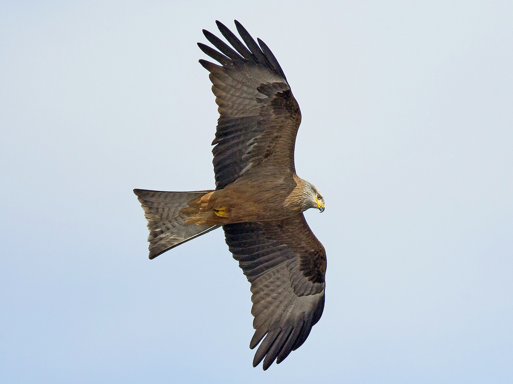
Credit: Macaulay Library © Cornell Lab of Ornithology ML45127481
Size: Kite size
Status: Very common resident
Field characters: Large raptor with forked tail. Dark brown plumage. Wings held
in shallow V when soaring. Wings appear pale from below.
Best seen at: Throughout campus, especially near human habitation
Habits: Scavenges around garbage dumps. During breeding season hunts insects
and small vertebrates. Known to rob food from crows.
Nesting: Breeds December to April. Builds large stick nest in tall trees. Clutch of
2-3 white eggs. Both parents incubate for 30-35 days.
Credit: Macaulay Library © Cornell Lab of Ornithology ML609495675
Size: Kite-sized
Status: Common resident
Field characters: Large black bird with red patch on nape and bare red crown
patch. Long curved bill. Metallic sheen on neck and wings.
Best seen at: Open areas, grasslands and moist ground
Habits: Usually in small flocks. Probes marshy areas for insects, snails and small
frogs.
Nesting: Breeds March to August. Platform nest in large trees. Clutch of 2-4 pale
blue eggs. Both parents incubate for 28-30 days.

Credit: Macaulay Library © Cornell Lab of Ornithology ML303618951
Size: Kite-sized
Status: Uncommon resident
Field characters: Powerful falcon with dark slaty upperparts, white-to-buffish
barred underparts, and broad black moustachial stripe.
Best seen at: Around tall buildings and open areas
Habits: Makes spectacular stoops on pigeons and waterfowl from great heights.
Extremely fast and agile hunter.
Nesting: Breeds February to April. Nests on cliff ledges or tall buildings.
Clutch of 3-4 brownish-spotted eggs. Both parents participate in nesting
duties.

Credit: Macaulay Library © Cornell Lab of Ornithology ML126386591
Size: Myna+
Status: Common resident
Field characters: Small compact hawk. Male blue-grey above, rufous barred
white below. Female browner above. Deep red iris, yellow legs distinctive.
Best seen at: Wooded areas, gardens and groves across campus
Habits: Bold hunter, makes swift dashes at prey from concealed perches. Feeds
mainly on lizards, large insects, small birds and rodents.
Nesting: Breeds March to June. Builds neat stick nest high in trees. Clutch of 3-4
bluish-white eggs. Female incubates for 28-30 days.

Credit: Macaulay Library © Cornell Lab of Ornithology ML614444237
Size: Bulbul+
Status: Common resident
Field characters: Dark slaty-grey above, white face, neck and breast. Red base to
bill and undertail. Legs greenish-yellow.
Best seen at: Around ponds, marshes and wet ditches with good cover
Habits: Skulking but not particularly shy. Walks deliberately, flicking tail. Feeds on
insects, molluscs, seeds and vegetable matter.
Nesting: Breeds June to September. Builds pad of rushes in dense vegetation near
water. Clutch of 6-7 buff eggs with reddish spots.

Credit: Macaulay Library © Cornell Lab of Ornithology ML126568571
Size: Myna+
Status: Very common resident
Field characters: Earthy brown when at rest but startlingly white in flight.
Breeding birds develop golden-buff plumes on back. Yellow bill with dark
tip.
Best seen at: Wherever there is water - ponds, marshes, paddy fields
Habits: Stands motionless or walks slowly when hunting. Suddenly stabs at prey.
Feeds mainly on frogs, fish, crabs and aquatic insects.
Nesting: Colonial nester. Breeds June to September in mixed heronries. Platform
nest of twigs. Clutch of 3-5 pale blue eggs.

Credit: Macaulay Library © Cornell Lab of Ornithology ML304986701
Size: Crow+
Status: Common resident
Field characters: Stocky heron with black crown and back, grey wings,
white forehead and underparts. Red eyes distinctive. Juveniles brown and
streaked.
Best seen at: Wetlands and water bodies with good tree cover nearby
Habits: Most active at dusk and dawn. Roosts by day in dense trees. Stands
hunched at water’s edge. Feeds mainly on fish, frogs, and aquatic insects.
Nesting: Colonial nester. Breeds April to September. Platform nest of
sticks in trees near water. Clutch of 3-4 pale blue eggs. Both parents share
duties.

Credit: Unknown - Unknown location Macaulay Library © Cornell Lab of Ornithology ML608663702
Size: Myna++
Status: Very common resident
Field characters: Stocky white egret with short thick neck. Breeding birds
develop rich orange-buff plumes on head, neck and back. Yellow bill becomes
orange-red in breeding.
Best seen at: Grasslands and agricultural areas, often following grazing
cattle
Habits: Constantly follows cattle and other livestock, catching disturbed insects.
More terrestrial than other egrets. Often in flocks.
Nesting: Colonial nester. Breeds June to September. Platform nest in mixed
heronries. Clutch of 3-4 pale blue eggs. Both parents incubate and feed young.

Credit: Macaulay Library © Cornell Lab of Ornithology ML168489091
Size: Myna++
Status: Common resident
Field characters: Slender white egret with long neck, black bill and legs.
Distinctive yellow feet. Breeding birds develop long lacy plumes on head, neck and
back.
Best seen at: All types of wetlands and water bodies
Habits: Active hunter, running and darting after prey in shallow water. Often uses
feet to stir up prey. More aquatic than Cattle Egret.
Nesting: Colonial nester. Breeds June to September in mixed heronries. Platform
nest of sticks. Clutch of 3-5 pale greenish-blue eggs.
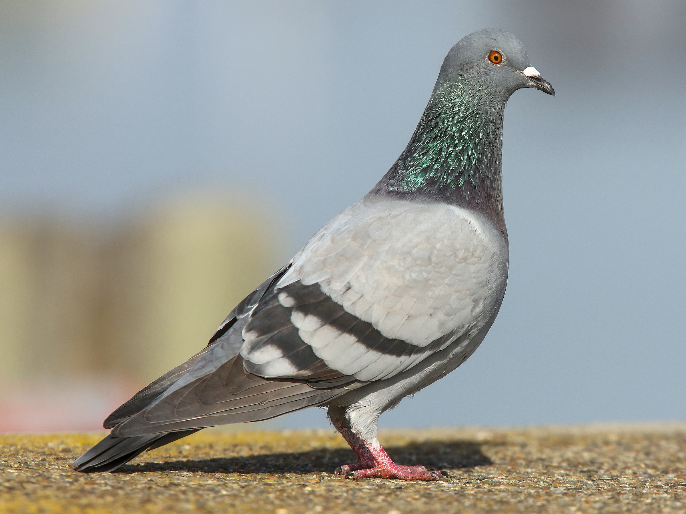
Credit: Macaulay Library © Cornell Lab of Ornithology ML308065631
Size: Myna+
Status: Very common resident
Field characters: Bluish-grey with iridescent green and purple sheen on neck.
Two prominent black wingbars and dark terminal tail band. Many color variants in
urban birds.
Best seen at: Urban areas, especially around buildings and monuments
Habits: Gregarious, feeds in flocks on ground. Swift direct flight. Highly adapted to
human settlements.
Nesting: Breeds throughout year. Flimsy platform nest on ledges of buildings.
Clutch of 2 white eggs. Both parents incubate and feed squabs with ’crop
milk’.

Credit: Macaulay Library © Cornell Lab of Ornithology ML621165796
Size: Myna
Status: Common resident
Field characters: Vinaceous-grey dove with black-and-white checkered
patch on hindneck. Long graduated tail with white corners. Pale buffy-pink
underparts.
Best seen at: Gardens, groves, and light woodland across campus
Habits: Usually in pairs. Walks sedately on ground searching for seeds.
Characteristic mellow cooing call ’ku-kroo-ku’.
Nesting: Breeds mainly February to September. Flimsy platform nest of
twigs in bushes or small trees. Clutch of 2 white eggs. Both parents share
duties.

Credit: Macaulay Library © Cornell Lab of Ornithology ML622010668
Size: Myna-
Status: Common resident
Field characters: Dainty dove, smaller and slimmer than Spotted Dove.
Pinkish-brown above, vinous below. Blue-grey wings with rufous primaries.
Distinctive speckled collar patch.
Best seen at: Open areas with scattered trees and scrub
Habits: More terrestrial than other doves. Frequently seen in pairs on ground or
wires. Musical call ’proo-proo-proo’.
Nesting: Breeds year-round. Simple platform nest low in thorny trees. Clutch of 2
white eggs. Shared parental care.
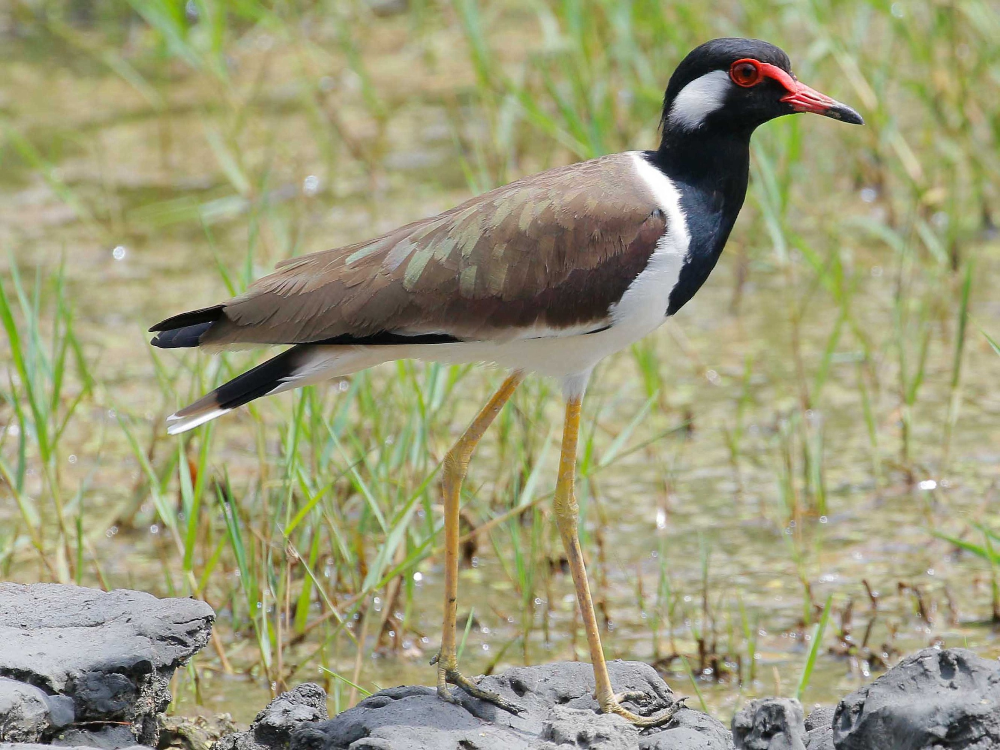
Credit: Macaulay Library © Cornell Lab of Ornithology ML126390831
Size: Myna++
Status: Common resident
Field characters: Large plover with distinctive red fleshy wattles in front of eyes.
Black-and-white head and neck, brown back, white belly. Red bill with black
tip.
Best seen at: Open areas, playgrounds, and margins of water bodies
Habits: Bold and noisy. Runs in short bursts, stopping abruptly. Famous for
persistent ’did-he-do-it’ calls day and night.
Nesting: Breeds mainly March to August. Nest is shallow scrape on ground, often
on gravel. Clutch of 4 stone-colored eggs with black blotches. Both parents very
aggressive in nest defense.

Credit: Macaulay Library © Cornell Lab of Ornithology ML126392811
Size: Crow-
Status: Common resident
Field characters: Striking sexual dimorphism - male glossy blue-black with
crimson eye; female brown with white spots and bars. Both with heavy pale green
bill.
Best seen at: Wooded areas and gardens with fruiting trees
Habits: More often heard than seen. Male’s loud ’ku-ooo’ calls increase in summer.
Mainly frugivorous but also eats insects and eggs.
Nesting: Brood parasite primarily on House Crows. Breeding season March to
August coinciding with hosts. Female lays one egg per crow nest.

Credit: Macaulay Library © Cornell Lab of Ornithology ML142648801
Size: Bulbul-
Status: Common summer visitor
Field characters: Grey bird with dark grey breast and pale belly. Yellow eye-ring
distinctive. Female browner. Juvenile heavily barred below.
Best seen at: Found in wooded areas across campus.
Habits: Rather secretive. Known for distinctive ascending whistle ’pee-pee-pee-pee’.
Feeds mainly on insects, especially hairy caterpillars.
Nesting: Brood parasite, laying eggs mainly in nests of Prinias and Cisticolas.
Breeding season coincides with hosts, March to September.

Credit: Macaulay Library © Cornell Lab of Ornithology ML133733311
Size: Myna++
Status: Common resident
Field characters: Remarkable resemblance to Shikra hawk in size, shape and
plumage - an example of aggressive mimicry. Finely barred underparts.
Best seen at: Found throughout wooded areas of campus.
Habits: Known for crescendo call ”brain-fever, brain-fever, BRAIN-FEVER”,
increasing in pitch and intensity. Feeds mainly on insects, especially caterpillars.
Nesting: Brood parasite, primarily targeting babblers. Peak breeding season March
to July coinciding with host species.

Credit: Macaulay Library © Cornell Lab of Ornithology ML126393221
Size: Crow
Status: Common resident
Field characters: Large, black bird with chestnut wings and long tail. Red eyes
and curved black bill distinctive. Female slightly larger.
Best seen at: Found in dense vegetation across the campus.
Habits: Skulking habit, often seen walking on ground. Deep resonant
’whoop-whoop-whoop’ calls. Feeds on snakes, lizards, large insects, and bird
eggs.
Nesting: Builds a domed nest in dense vegetation. Lays 3-5 white eggs. Both
parents share incubation (18-19 days) and chick care.

Credit: Macaulay Library © Cornell Lab of Ornithology ML622584055
Size: Myna++
Status: Very common resident
Field characters: Bright green parakeet with long tail. Males have pink and black
neck ring, females lack this. Red bill distinctive.
Best seen at: Abundant throughout the campus, especially in wooded
areas.
Habits: Noisy, gregarious birds. Often in large communal roosts. Feeds mainly on
fruits, seeds, buds, and grain crops.
Nesting: Breeds December to May. Nests in tree hollows. Lays 4-6 white eggs.
Female incubates for 22-24 days while male feeds her.

Credit: Macaulay Library © Cornell Lab of Ornithology ML133717151
Size: Crow
Status: Uncommon resident
Field characters: Much larger than Rose-ringed with massive cherry-red beak.
Males have broad rose-pink and black collar. Distinctive maroon shoulder
patch.
Best seen at: Found in mature woodlands with large trees, less common than other
parakeets.
Habits: Similar habits to Rose-ringed but more wary. Feeds primarily on fruits,
seeds, and grain. Harsh rolling calls in flight.
Nesting: Nests in large cavities of mature trees. Lays 2-4 white eggs. Female
incubates for 23-26 days while male feeds her.

Credit: Macaulay Library © Cornell Lab of Ornithology ML133932211
Size: Myna
Status: Common resident
Field characters: Male has plum-red head with black collar and blue nape; female
bluish-grey headed. Both have green body, yellow-tipped tail and red shoulder
patch.
Best seen at: Regular visitor to wooded areas of the campus.
Habits: Usually in pairs or small flocks. More arboreal than other parakeets. Feeds
mainly on wild figs, fruits, and ripening grain.
Nesting: Nests in tree hollows, February to May. Lays 4-6 white eggs. Female
incubates for 21-23 days while male feeds her.
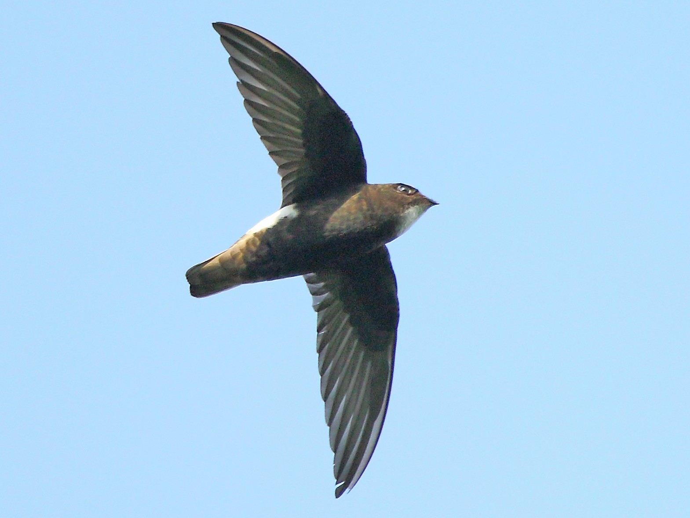
Credit: Macaulay Library © Cornell Lab of Ornithology ML80511821
Size: Myna-
Status: Very common resident
Field characters: Small swift with white rump and shallow-forked tail. Overall
dark brown-black plumage. Wings long and scythe-shaped.
Best seen at: Common throughout urban areas of the campus.
Habits: Aerial feeder, constantly on wing. Characteristic screaming parties near
nesting sites. Often seen in large groups making low sweeping flights.
Nesting: Colonial nester, builds retort-shaped mud nests under building eaves and
bridges. Several pairs may share common entrance tunnel. Lays 2-3 white
eggs.
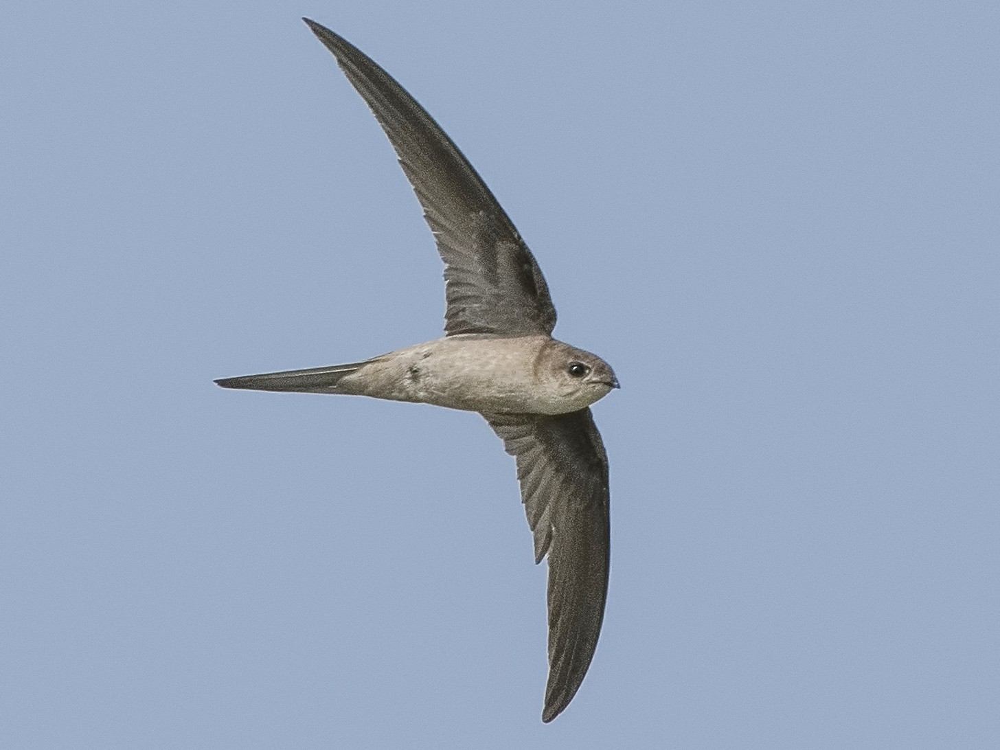
Credit: Macaulay Library © Cornell Lab of Ornithology ML126573081
Size: Sparrow-
Status: Common resident
Field characters: Smaller than House Swift, slender with deeply forked tail.
Overall sooty brown. Distinctive stiff, fluttering wing beats.
Best seen at: Found around palm trees, especially Borassus and Coconut
palms.
Habits: Very fast flier with quick directional changes, rarely glides. Often seen
around single palms which they circle repeatedly.
Nesting: Breeds year-round. Attaches tiny cup nest to underside of palm frond
using saliva. Lays 2-3 elongated white eggs.

Credit: Macaulay Library © Cornell Lab of Ornithology ML126564101
Size: Myna+
Status: Common resident
Field characters: Large kingfisher with bright blue back, chocolate brown head,
and white breast. Large red bill distinctive. Broad blue wing-band visible in
flight.
Best seen at: Found near water bodies and in gardens across campus.
Habits: Bold and noisy. Maintains feeding territory which it advertises with loud
screaming calls. Feeds on fish, frogs, lizards, insects, and even small birds and
mice.
Nesting: Breeds March to June. Nests in horizontal tunnel (1m deep) in
earth banks. Lays 4-7 round white eggs. Both parents incubate and feed
young.

Credit: Macaulay Library © Cornell Lab of Ornithology ML168729731
Size: Bulbul-
Status: Common resident
Field characters: Small kingfisher with brilliant blue upperparts and orange
underparts. Long bill and short tail. Female has reddish lower mandible.
Best seen at: Found near water bodies and ponds on campus. Each bird maintains
linear territory along water.
Habits: Perches low over water, dives vertically for fish with splash. Often hovers
before plunging. Sharp ’chee-chee’ flight call.
Nesting: Breeds February to April. Nests in 60-90cm tunnel in earth bank. Lays 5-7
round white eggs. Both parents incubate and feed young.
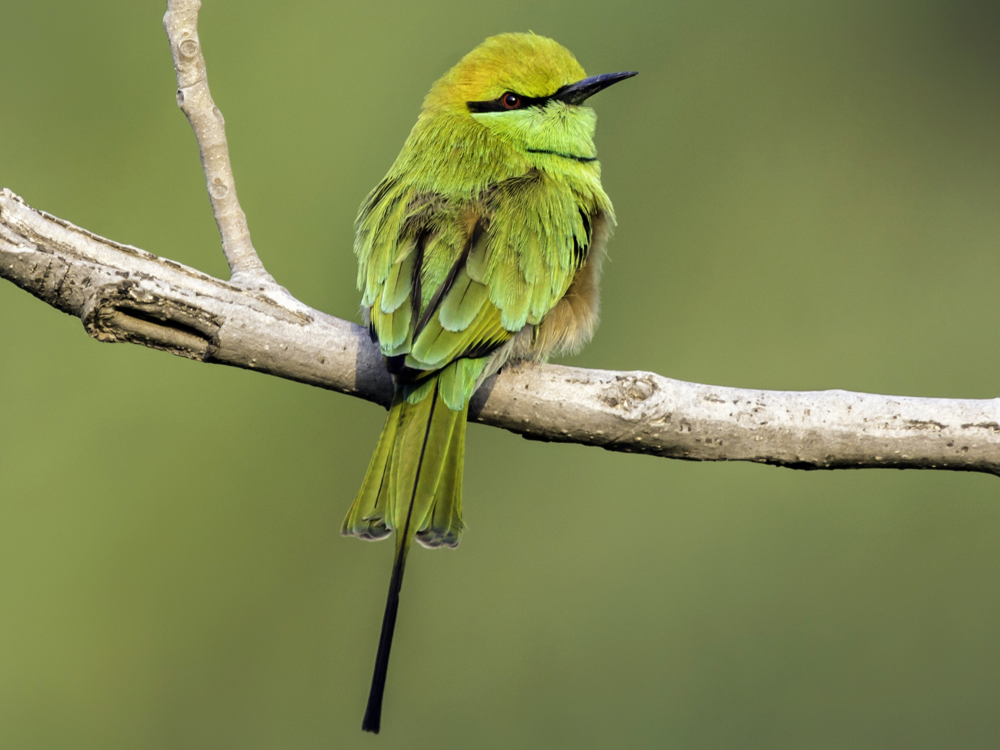
Credit: Macaulay Library © Cornell Lab of Ornithology ML126561671
Size: Sparrow+
Status: Common resident
Field characters: Small slender green bird (18-20 cm) with distinctive
elongated central tail feathers. Rich golden-green plumage with turquoise-blue
throat patch bordered by black gorget. Black eye-stripe running through
red-brown eyes. Slender curved bill. Non-breeding birds duller with shorter tail
streamers.
Best seen at: Open areas across campus with scattered trees, particularly around
the administrative buildings and sports grounds.
Habits: Highly aerial, characteristically hawking insects from prominent perches on
bare branches or wires. Makes graceful swooping flights to catch flying insects,
especially bees and wasps, which it subdues by repeatedly striking against perch.
Often seen in loose groups of 3-10 birds.
Nesting: Colonial nester, breeding season principally March-June. Nests in
self-excavated tunnels in earth banks, 1-2 m deep ending in oval chamber. Lays 4-7
spherical glossy white eggs. Both parents participate in excavation, incubation and
feeding young.

Credit: Macaulay Library © Cornell Lab of Ornithology ML126555661
Size: Bulbul+
Status: Common resident
Field characters: Small stocky bird (16.5-17 cm) with distinctive pattern:
grass-green overall with crimson forehead, crown and throat patch. Black eye-stripe
and throat-band. Yellow patches around eyes and at base of lower mandible. Heavy,
chisel-like bill. Sexes alike.
Best seen at: Wooded areas throughout campus, particularly partial to fig trees and
other fruiting species.
Habits: Sedentary and arboreal. Known for monotonous metallic tuk..tuk..tuk call
repeated for long periods, resembling a coppersmith at work. Rather lethargic
between feeding bouts. Predominantly frugivorous, especially fond of fig fruits, but
also takes insects.
Nesting: Breeds February to April, occasionally year-round. Excavates nest
hole in dead tree branch, usually on underside. Typical clutch 3-4 white
eggs. Both parents share nest excavation, incubation (14 days) and care of
young.

Credit: Macaulay Library © Cornell Lab of Ornithology ML133734741
Size: Sparrow-
Status: Common resident
Field characters: Small martin (13-14 cm) with sooty brown plumage overall.
Slightly paler below with indistinct streaking on throat. Short, slightly forked tail.
Broad-based wings. Lacks the contrasting rump patch of other swallows. Sexes
alike.
Best seen at: Around campus buildings and rocky outcrops, particularly abundant
near the main buildings and library complex.
Habits: Aerial feeder, catching insects in flight with agile twists and turns. Often
seen gliding close to building walls. More sedentary than other swallows,
maintaining small territories around nesting sites. Flight more fluttering and less
direct than other swallows.
Nesting: Breeds mainly February to April, but can breed year-round. Builds
characteristic retort-shaped mud nest under overhangs on buildings or rock faces.
Clutch typically 2-3 white eggs spotted with brown. Both parents share all nesting
duties.
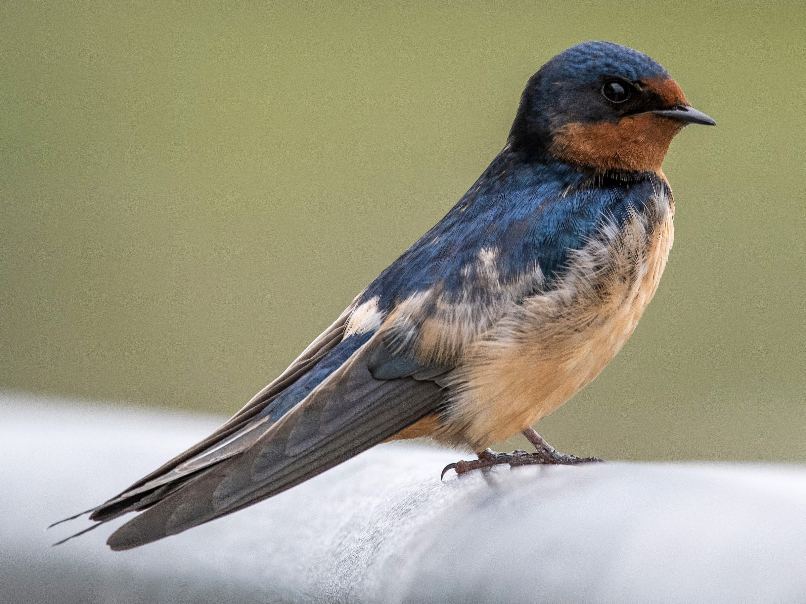
Credit: Macaulay Library © Cornell Lab of Ornithology ML312652671
Size: Sparrow
Status: Common winter visitor
Field characters: Graceful swallow (17-19 cm including long forked tail
streamers). Steel-blue black above, creamy white below with rusty forehead and
throat. Broad dark blue breast band. Female slightly duller with shorter tail streamers.
Juveniles browner with shorter tails.
Best seen at: Open areas across campus, particularly abundant over lawns and
playing fields.
Habits: Supremely graceful aerialist, coursing low over ground with fluid
movements. Often perches on wires in groups. Most numerous early morning and
evening when insects are abundant. Occasionally seen ”drinking” on the wing from
water bodies.
Nesting: Does not breed on campus; winters September to April. Palearctic
migrant.

Credit: Macaulay Library © Cornell Lab of Ornithology ML625261168
Size: Sparrow
Status: Common resident
Field characters: Similar to Barn Swallow but with rufous rump and shorter tail
streamers.
Best seen at: Found throughout campus, especially near buildings.
Habits: Aerial feeder, often in mixed flocks with other swallows.
Nesting: Builds bottle-shaped mud nests under structures. Lays 3-4 white eggs.
Both parents incubate for about 14-16 days and care for the chicks.

Credit: Macaulay Library © Cornell Lab of Ornithology ML133941481
Size: Sparrow
Status: Common resident
Field characters: Distinctive swallow (13-14 cm plus 5-7 cm wire-like tail
streamers in adult male). Glossy steel-blue above with pure white underparts.
Chestnut cap contrasts with blue back. Female similar but with shorter tail ”wires”.
Young birds lack the wire-like tail extensions.
Best seen at: Around water bodies and open areas on campus, particularly near
the artificial ponds and wetlands.
Habits: Expert flyer, typically forages lower than other swallows with characteristic
gliding interspersed with rapid wing beats. Often perches on thin twigs or wires, their
long tail ”wires” distinctive. Usually seen in pairs or small parties.
Nesting: Breeds mainly March to October. Builds neat cup-shaped mud nest,
usually under bridges or culverts over water. Clutch of 2-4 white eggs with brown
speckles. Both parents share incubation and feeding duties.
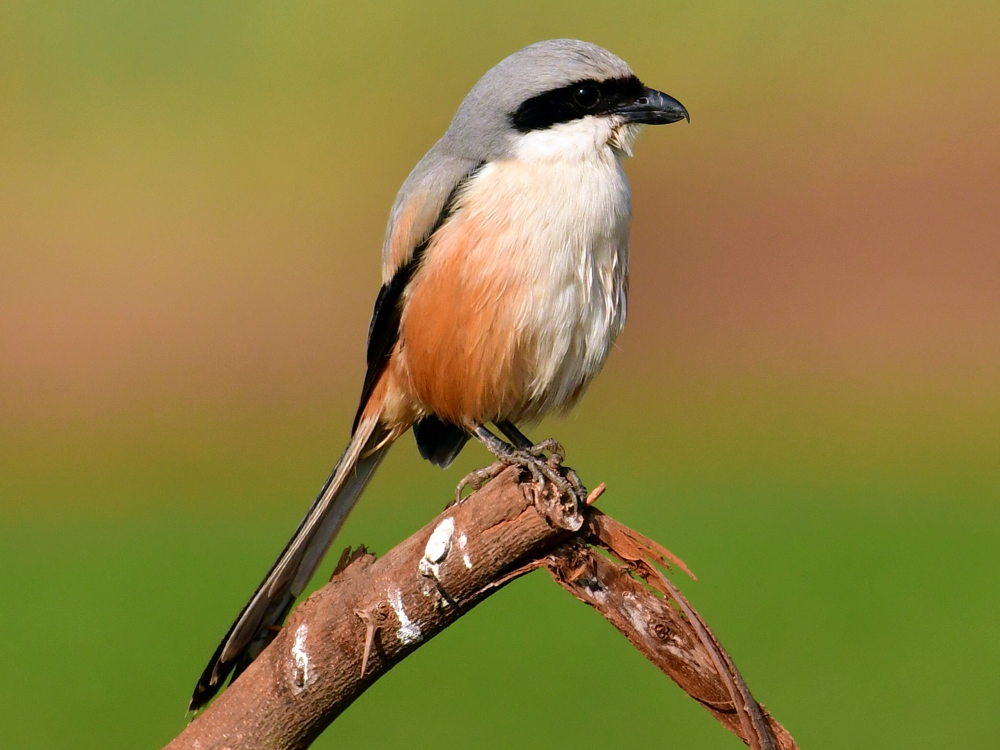
Credit: Macaulay Library © Cornell Lab of Ornithology ML133755601
Size: Bulbul+
Status: Common resident
Field characters: Medium-sized shrike (23-25 cm) with long graduated tail. Head
and upper mantle grey, back and wings rufous-brown. Black mask through eye
extending to ear-coverts. Whitish underparts often tinged buff on flanks. Female
slightly duller. Juvenile browner with faint barring below.
Best seen at: Open areas with scattered trees, particularly around the sports fields
and administrative blocks.
Habits: Bold hunter, typically perches conspicuously on exposed branches, posts, or
wires. Pounces on prey from perch, often impaling victims on thorns for later
consumption. Has a varied diet including large insects, lizards, small birds, and
rodents.
Nesting: Breeds March to September, peak in April-June. Builds substantial cup
nest of twigs, grass, and roots in thorny bushes or small trees. Clutch of 3-6 eggs, pale
greenish-white heavily spotted with brown. Incubation 14-16 days, mainly by
female.
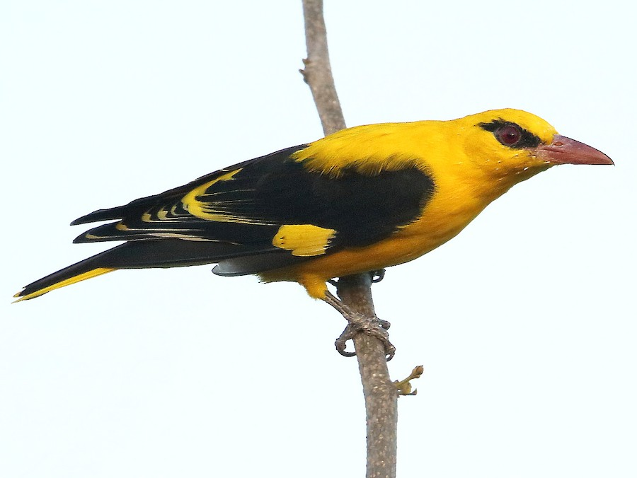
Credit: Macaulay Library © Cornell Lab of Ornithology ML258102271
Size: Myna+
Status: Common resident
Field characters: Striking bird (24-25 cm) with marked sexual dimorphism. Male
brilliant yellow with contrasting black wings, central tail feathers, and eye-stripe.
Female and young olive-green above, whitish below with dark streaking. All forms
show distinctive white wing patch.
Best seen at: Canopy of well-wooded areas across campus, particularly in areas
with fruiting trees.
Habits: Shy and elusive despite bright coloration. More often heard than seen. Rich,
fluty calls including characteristic ’pee-lo’ whistle. Moves deliberately through
canopy searching for fruits and insects.
Nesting: Breeds April to July. Constructs distinctive hammock-like nest
suspended in horizontal tree fork, usually high up. Lays 2-4 glossy white
eggs with sparse black spots. Both parents incubate for 14-15 days and feed
young.
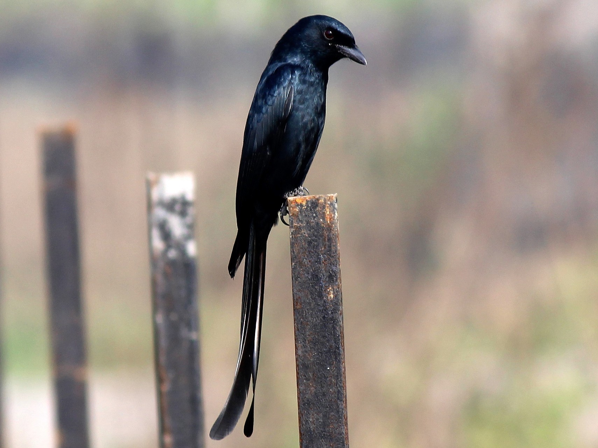
Credit: Macaulay Library © Cornell Lab of Ornithology ML126548371
Size: Myna+
Status: Common resident
Field characters: Conspicuous glossy black bird (28-31 cm, including tail) with
distinctly forked tail. Adult has bright crimson iris. Strong, slightly hooked black bill.
Sexes alike. Juveniles duller with brownish underparts and white spots in
axillaries.
Best seen at: Ubiquitous across campus in open areas with scattered trees,
particularly common around grazing cattle.
Habits: Exceptionally bold and aggressive, regularly mobbing much larger birds.
Highly aerial, makes acrobatic sallies to catch flying insects. Often uses larger
animals as beaters to flush prey. Varied repertoire includes accomplished
mimicry.
Nesting: Breeds March to August, peak in April-June. Builds neat cup nest in outer
branches of trees. Clutch typically 3-5 eggs, salmon-pink to reddish-white with
darker spots. Both parents incubate for about 14-15 days.

Credit: Macaulay Library © Cornell Lab of Ornithology ML133717951
Size: Myna+
Status: Winter visitor
Field characters: Similar in size to Black Drongo (28-30 cm) but overall smoky
grey instead of glossy black. Less deeply forked tail. Dark red-brown iris. Juvenile
browner with white speckles on underparts.
Best seen at: Prefers more densely wooded areas than Black Drongo, commonly
seen in campus gardens and groves.
Habits: Generally less aggressive than Black Drongo but equally accomplished
flycatcher. Often joins mixed-species hunting parties in winter. Flight more buoyant
with slower wing beats. Call softer and less harsh.
Nesting: Does not breed on campus. Migrant visitor from Himalayas, present
September to April.

Credit: Macaulay Library © Cornell Lab of Ornithology ML97324171
Size: Myna
Status: Very common resident
Field characters: Sturdy bird (23-25 cm) with distinctive yellow bill, legs, and
bare skin patches behind eye. Rich brown body plumage with black head, throat and
upper breast. Conspicuous white wing patches and outer tail corners. Sexes alike.
Juvenile duller with darker bill.
Best seen at: Abundant throughout campus, particularly around buildings and
open areas.
Habits: Highly adaptable and opportunistic. Walks with characteristic head-bobbing
gait. Usually in pairs or small groups. Omnivorous diet includes insects,
fruits, nectar, and human food scraps. Roosts communally, often in large
numbers.
Nesting: Breeds primarily March to September. Nests in cavities in trees, buildings,
and other structures. Clutch of 4-6 glossy blue eggs. Both parents incubate for 13-14
days and care for young.

Credit: Macaulay Library © Cornell Lab of Ornithology ML126402031
Size: Myna
Status: Common resident
Field characters: Slimmer than Common Myna (22-24 cm). Overall ashy-grey
plumage becoming darker on wings and tail. Distinctive tuft of erect feathers at base
of bill. Orange-yellow bill and legs. Small patch of bare yellow skin behind eye.
Sexes alike.
Best seen at: Prefers more wooded areas than Common Myna, frequent in campus
gardens and groves.
Habits: More arboreal than Common Myna. Usually in pairs or small parties. Flight
direct with rapid wing beats. Varied diet including fruits, nectar, insects, and small
reptiles. Voice less harsh than Common Myna.
Nesting: Breeds March to August. Nests in tree hollows, sometimes in old
woodpecker holes. Clutch of 3-5 pale blue eggs. Both parents participate in
incubation (13-14 days) and feeding young.

Credit: Macaulay Library © Cornell Lab of Ornithology ML133728841
Size: Myna
Status: Common resident
Field characters: Distinctive starling (19-21 cm) with long crest. Overall
vinaceous-buff plumage with grey wings and tail. Black cap extends to pointed crest.
White cheeks and underparts. Bright yellow bill with bluish base. Sexes similar but
female slightly duller.
Best seen at: Found in well-wooded areas and gardens across campus, particularly
where flowering trees occur.
Habits: Usually seen in pairs or small groups. More arboreal than mynas. Agile
flier, adept at hawking insects in air. Feeds extensively on tree nectar and berries. Has
melodious calls including sweet whistles.
Nesting: Breeds April to September. Nests in tree holes and building cavities.
Clutch of 3-5 pale blue eggs. Both parents share incubation (14-15 days) and feeding
duties.

Credit: Macaulay Library © Cornell Lab of Ornithology ML126371181
Size: Bulbul
Status: Common resident
Field characters: Striking black and white bird (19-20 cm) with long frequently
cocked tail. Male glossy blue-black above with white wingbars and outer tail
feathers. Female similar but grey-brown where male is black. Both sexes have
gleaming white breast and abdomen.
Best seen at: Common in wooded areas and gardens with good undergrowth.
Habits: Bold and confiding. Frequently seen on ground with tail cocked. One of the
finest songsters, repertoire includes rich melodious whistles and warbles. Most vocal
at dawn. Territory fiercely defended by both sexes.
Nesting: Breeds mainly March to July. Nests in tree hollows, walls, or buildings.
Clutch of 4-5 eggs, pale green-blue with reddish-brown spots. Female incubates for
12-13 days, both parents feed young.

Credit: Macaulay Library © Cornell Lab of Ornithology ML143852871
Size: Sparrow-
Status: Common resident
Field characters: Small active flycatcher (17-18 cm including long fan-shaped
tail). Dark brown above with spotted white breast and prominent white supercilium.
Broad white tips to tail feathers conspicuous in display. Sexes alike but juveniles
duller with less distinct spotting.
Best seen at: Inhabits wooded areas and gardens with good tree cover across
campus.
Habits: Highly active and acrobatic, constantly on move with tail spread
fan-wise. Makes short aerial sallies to catch insects, often returning to same
perch. Frequently joins mixed hunting parties. Voice includes sweet trilling
notes.
Nesting: Breeds mainly March to September. Builds beautiful tiny cup nest of fine
grass bound with cobwebs on horizontal branch. Typically lays 2-3 cream-colored
eggs with reddish spots. Both parents share nesting duties.

Credit: Macaulay Library © Cornell Lab of Ornithology ML126372681
Size: Bulbul-
Status: Common resident
Field characters: Small chat (14-15 cm) with marked sexual dimorphism. Male
glossy black with conspicuous white wing patch and rump. Female warm brown
above, paler below, with rufous rump. Both sexes have relatively short tail and thin
black bill.
Best seen at: Frequents open areas with scattered bushes, particularly around
sports fields and building margins.
Habits: Characteristic pose on prominent low perches from which makes short
flights to catch insects. Males particularly conspicuous, often performing song-flights
in breeding season. Frequently bobs tail when agitated.
Nesting: Breeds March to August, peak April-June. Nest well-concealed in grass
tussock or base of bush. Clutch 3-5 pale blue-green eggs with rusty spots. Female
incubates for 12-13 days, both parents feed young.

Credit: Macaulay Library © Cornell Lab of Ornithology ML300203931
Size: Bulbul
Status: Very common resident
Field characters: Medium-sized bulbul (20-22 cm) with distinctive pointed black
crest. Dark brown-black above with scale-like pattern on back. Brownish-white
below with distinctive crimson-red vent. Narrow white tips to tail feathers. Sexes
alike but juveniles duller with brownish crest.
Best seen at: Ubiquitous across campus in all habitats, from dense gardens to
open areas with scattered trees.
Habits: Active and sprightly with loud cheerful calls. Usually in pairs or
family parties. Highly adaptable, equally at home in trees and bushes. Diet
includes fruits, flower nectar, and insects. Aggressive defender of feeding
territories.
Nesting: Breeds practically year-round with peak February to May. Neat cup nest
in bushes or small trees, 1-3 m high. Clutch typically 2-3 pinkish-white eggs
with red-brown spots. Both parents share 12-14 day incubation and feeding
duties.
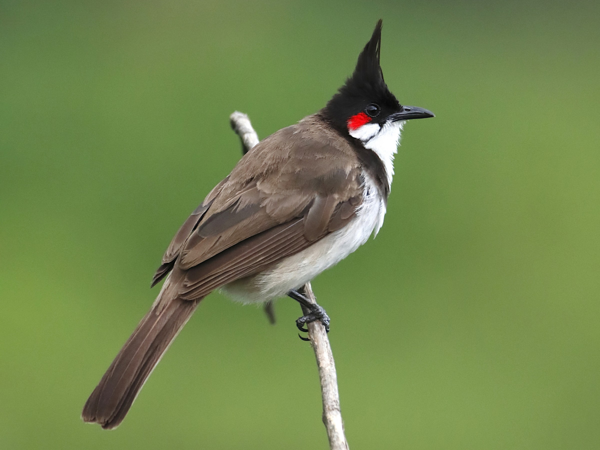
Credit: Macaulay Library © Cornell Lab of Ornithology ML311377551
Size: Bulbul
Status: Common resident
Field characters: Distinctive bulbul (20-22 cm) with long pointed black crest and
crimson-red ear patches (”whiskers”). Brown above, white below with prominent
black gorget. Crimson patch under tail. Narrow white tips to tail feathers. Sexes alike,
juveniles duller with shorter crest.
Best seen at: Prefers well-wooded areas and gardens with dense shrubbery across
campus.
Habits: More arboreal than Red-vented Bulbul. Actively hops among branches with
crest raised. Clear melodious calls including distinctive ’kick-pettigrew’. Frequently
seen in pairs, territorial throughout year.
Nesting: Breeds mainly February to September. Builds neat cup nest in dense
bushes or creepers. Clutch of 2-4 pale pink eggs with red-brown spots. Incubation
11-12 days by both parents, who also jointly feed young.
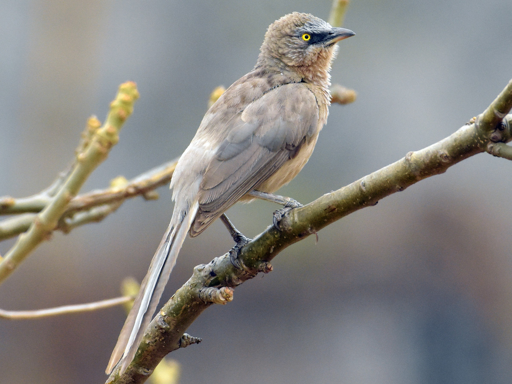
Credit: Macaulay Library © Cornell Lab of Ornithology ML133742581
Size: Myna+
Status: Common resident
Field characters: Large gregarious babbler (25-27 cm) with distinctive long,
graduated tail. Overall grey-brown above with pale shaft-streaks giving streaked
appearance. Dull white below. Strong curved bill. Pale yellow eyes. Sexes
alike.
Best seen at: Found in open scrub and gardens across campus, particularly areas
with thorny vegetation.
Habits: Highly social, moving in noisy parties of 6-10 birds. Feeds mainly on
ground, methodically turning over leaves and debris. Members of group
maintain constant contact with harsh chattering calls. Communal preening
common.
Nesting: Cooperative breeder, March to September. Several group members help
build untidy cup nest in thorny bushes. Clutch 3-4 deep turquoise-blue eggs. Group
members share incubation (15-16 days) and feeding of young.
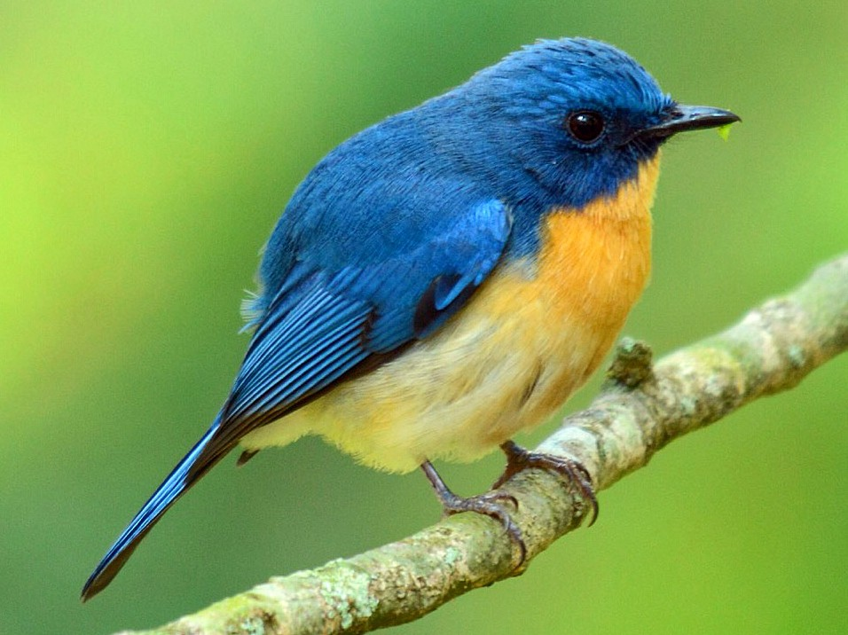
Credit: Unknown - Unknown location Macaulay Library © Cornell Lab of Ornithology ML133939821
Size: Bulbul-
Status: Common resident
Field characters: Small flycatcher (13-14 cm) with marked sexual dimorphism.
Male bright blue above, orangish-rufous on throat and breast, white on belly. Female
duller blue-grey above, pale rufous below. Both sexes have black bill and
legs.
Best seen at: Inhabits shaded areas in well-wooded parts of campus with good
undergrowth.
Habits: Rather shy and retiring. Makes short sallies from perch to catch insects,
often returning to same spot. Most active at dawn and dusk. Males have sweet
whistling song delivered from concealed perch.
Nesting: Breeds April to August. Nests in tree hollow or similar cavity, sometimes
quite low. Clutch of 3-4 pale pink eggs with reddish-brown spots. Female does most
incubation, both parents feed young.

Credit: Macaulay Library © Cornell Lab of Ornithology ML126403561
Size: Sparrow-
Status: Common resident
Field characters: Small warbler (13-14 cm) with distinctive seasonal variation.
Breeding birds ash-grey above, whitish below with rusty flanks; non-breeding birds
warmer brown above. Long graduated tail frequently held cocked. Dark bill, pale
legs. Sexes alike.
Best seen at: Found throughout campus in gardens, scrub, and grassy areas with
scattered bushes.
Habits: Active and restless, constantly moving through vegetation. Makes harsh
’chee-chee’ calls when alarmed. Notable for its ”tailoring” skill in nest construction.
Territory aggressively defended by both sexes.
Nesting: Breeds mainly June to September during monsoon. Builds deep purse-like
nest by stitching together leaves. Clutch 3-5 bright brick-red eggs. Both parents share
12-13 day incubation and care of young.

Credit: Macaulay Library © Cornell Lab of Ornithology ML150322831
Size: Sparrow-
Status: Common resident
Field characters: Slightly larger than Ashy Prinia (14-15 cm). Distinctive
seasonal dimorphism: breeding birds dark grey-brown above, whitish below with
prominent dark streaks on breast; non-breeding birds paler with less distinct
streaking. Long graduated tail. Pale legs. Sexes alike.
Best seen at: Prefers more open habitats than Ashy Prinia, found in grassland and
scrub areas across campus.
Habits: More terrestrial than other prinias, often descending to ground. Flight
peculiar - brief bursts with deeply undulating path. Distinctive rasping ’trree-trree’
calls. Males sing from prominent perches in breeding season.
Nesting: Breeds June to September, coinciding with monsoon. Builds
globular nest with side entrance in grass clumps close to ground. Clutch 3-5
greenish-white eggs with reddish speckles. Both parents share all nesting
duties.

Credit: Macaulay Library © Cornell Lab of Ornithology ML126406831
Size: Sparrow–
Status: Common resident
Field characters: Tiny warbler (13 cm) with relatively long, graduated tail usually
held cocked. Bright olive-green above, whitish below. Rufous crown and cheeks
distinctive. Male breeding has elongated central tail feathers. Dark bill, pale
flesh-colored legs.
Best seen at: Common throughout campus wherever there are bushes and small
trees, even in built-up areas.
Habits: Active and restless, constantly moving through vegetation searching for
insects. Loud ’to-wit to-wit’ calls repeated persistently. Notable for unique
nest-building technique, stitching living leaves together with plant fiber or spider
silk.
Nesting: Breeds mainly May to September. Creates remarkable nest by sewing
together large leaves to form cavity, lined with soft materials. Clutch 3-5
reddish-white eggs with brown spots. Female incubates 12 days, both parents feed
young.

Credit: Macaulay Library © Cornell Lab of Ornithology ML256739411
Size: Sparrow-
Status: Common winter visitor
Field characters: Small warbler (13-14 cm) with relatively short tail. Grey-brown
above, white below with faint buff wash on flanks. Distinctive dark mask through eye
contrasting with white throat. First-winter birds browner. Bill short, dark with pale
base.
Best seen at: Found in wooded areas and scrub across campus during winter
months.
Habits: Active but somewhat skulking. Constantly moves through bushes gleaning
insects from foliage. Characteristic rattling call notes. Often joins other small
insectivorous birds in mixed feeding parties.
Nesting: Does not breed on campus; winters September to April. Breeds in
temperate Eurasia.

Credit: Macaulay Library © Cornell Lab of Ornithology ML305880301
Size: Sparrow
Status: Very common resident
Field characters: Small, stocky bird (14-15 cm) with marked sexual dimorphism.
Male has grey crown, chestnut nape, black bib, and grey underparts. Female dull
brown above with broad buff supercilium, pale brown below. Both sexes have brown
wings with single white bar.
Best seen at: Common around buildings and human habitation across
campus.
Habits: Highly gregarious and adapted to human presence. Feeds mainly on
ground, taking grains, seeds, and scraps. Noisy, with characteristic chirping calls.
Males display by puffing feathers and hopping near females.
Nesting: Breeds throughout year with peak March to June. Nests in holes in
buildings or dense creepers. Clutch 3-6 white eggs heavily marked with brown. Both
parents incubate for 13-14 days and feed young.

Credit: Macaulay Library © Cornell Lab of Ornithology ML133720591
Size: Sparrow
Status: Common resident
Field characters: Sparrow-sized (15 cm) with seasonal sexual dimorphism.
Breeding male bright yellow with brown crown, black face-mask, and brown wings;
non-breeding male and female sparrow-like, warm brown above with pale
supercilium and underparts.
Best seen at: Found in grassland areas and reed beds on campus, especially near
water bodies.
Habits: Highly colonial during breeding season. Males construct elaborate pendant
nests, often several in succession. Expert weavers, using long strips of grass and
palm fronds. Feed mainly on grass seeds and paddy, occasionally taking
insects.
Nesting: Breeds during monsoon, June to September. Males build multiple
retort-shaped nests; females select and line chosen ones. Clutch 2-4 pure white eggs.
Female alone incubates for 14-15 days and cares for young.

Credit: Macaulay Library © Cornell Lab of Ornithology ML126370921
Size: Sparrow
Status: Common resident
Field characters: Small thrush (16-17 cm) with marked sexual dimorphism. Male
glossy jet-black with prominent white shoulder patches visible in flight. Female rich
brown above, darker brown below. Both sexes have characteristic orange-rufous vent
and under tail-coverts. Long tail frequently held cocked.
Best seen at: Common in open areas with scattered bushes, rocky ground, and
around buildings across campus.
Habits: Terrestrial habits, running and hopping on ground with tail cocked at sharp
angle. Bold and confiding. Males territorial year-round, frequently singing from
exposed perches. Diet mainly insects and small invertebrates.
Nesting: Breeds mainly March to September, peak in April-May. Nest
in holes in walls, banks, or among rocks. Clutch 2-4 pale blue-green eggs
with reddish-brown spots. Female incubates 12-13 days, both parents feed
young.

Credit: Macaulay Library © Cornell Lab of Ornithology ML126366191
Size: Sparrow-
Status: Common resident
Field characters: Tiny bird (10-11 cm) with distinctive white ring around eye.
Upper parts olive-green, throat and under tail-coverts bright yellow, rest of underparts
whitish. Small pointed bill slightly curved. Sexes alike.
Best seen at: Found throughout wooded areas of campus, particularly in flowering
trees and bushes.
Habits: Very active and acrobatic, often hanging upside down to probe
flowers and buds. Usually in small parties, maintaining contact with soft
’chee-chee’ calls. Flight swift and direct. Diet includes insects, nectar, and small
berries.
Nesting: Breeds March to September, peak April-June. Builds beautiful tiny cup
nest suspended in tree fork. Clutch 2-4 pale blue eggs. Both parents share
nest-building, 10-12 day incubation, and feeding young.

Credit: Macaulay Library © Cornell Lab of Ornithology ML97646291
Size: Sparrow-
Status: Common resident
Field characters: Small finch (11-12 cm) with distinctive scaly pattern on breast
and flanks. Upper parts rich brown, underparts white with dark brown scaling.
Stout, conical dark bill. Sexes alike but juveniles plain brown lacking scale
pattern.
Best seen at: Found in grassy areas, scrub, and around cultivation across
campus.
Habits: Highly social, usually in small flocks. Feeds mainly on grass seeds, often
seen clinging to grass heads. Sweet twittering contact calls. Flight swift and direct,
flock moving in tight formation.
Nesting: Breeds July to October, coinciding with grass seeding. Builds large,
rough ball nest with side entrance in thorny bushes or tall grass. Clutch 4-6
pure white eggs. Both parents share all nesting duties including 13-14 day
incubation.

Credit: Macaulay Library © Cornell Lab of Ornithology ML126547471
Size: Myna++
Status: Common resident
Field characters: Large, long-tailed crow (47-50 cm, half being tail).
Head, neck and breast sooty-black, upper parts rich rufous-brown. Wings
black with conspicuous white patch. Grey-tipped, graduated black tail. Sexes
alike.
Best seen at: Found in wooded areas across campus, particularly in areas with
large trees.
Habits: Bold and inquisitive. Moves through trees with series of glides and hops,
long tail used for balance. Omnivorous diet includes fruits, insects, lizards, bird eggs
and nestlings. Has range of loud, metallic calls.
Nesting: Breeds March to July. Builds neat cup nest of twigs high in tree fork.
Clutch 3-5 pale greenish-white eggs with brown spots. Both parents build nest and
feed young, female incubates alone for 16-18 days.
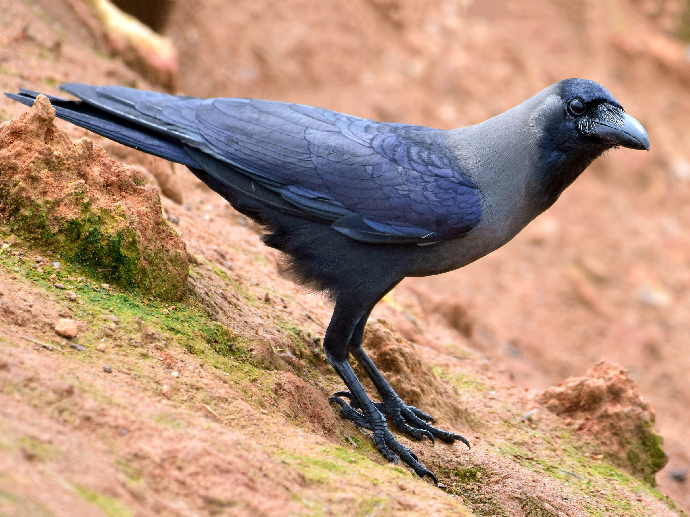
Credit: Macaulay Library © Cornell Lab of Ornithology ML126364891
Size: Crow
Status: Very common resident
Field characters: Medium-sized crow (42-44 cm) with distinctive grey neck
collar. Body glossy black with slight purple-blue sheen. Grey extends to upper breast
and nape. Heavy black bill. Sexes alike but juveniles duller with brownish cast to
grey areas.
Best seen at: Abundant throughout campus, especially near human habitation and
dining areas.
Habits: Highly intelligent and adaptable. Bold scavenger, taking wide variety of
food including human refuse. Usually in pairs or small groups. Roosts communally.
Wide repertoire of calls including familiar harsh ’caw’.
Nesting: Breeds mainly March to July. Builds untidy stick nest in trees. Clutch 4-5
pale blue-green eggs with brown spots. Female incubates for 16-17 days, fed on nest
by male. Both parents feed young.
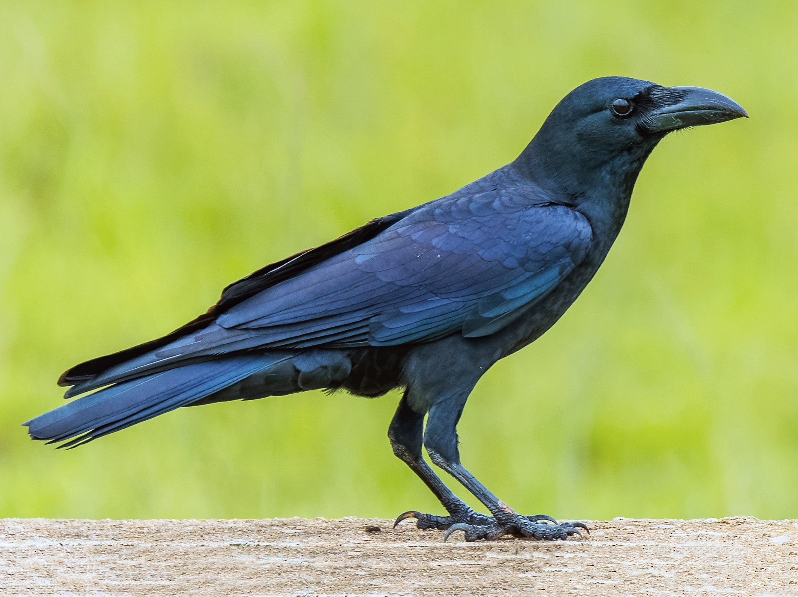
Credit: Macaulay Library © Cornell Lab of Ornithology ML85864161
Size: Crow+
Status: Common resident
Field characters: Larger than House Crow (52-54 cm) with heavier, more arched
bill. Entirely glossy black with purple-blue sheen. No grey collar. Wings
relatively longer and broader. Massive bill distinctive. Sexes alike but juveniles
duller.
Best seen at: Found in wooded areas of campus and surrounding regions, less
urban than House Crow.
Habits: More solitary and wary than House Crow. Flight stronger with deeper wing
beats. Primarily carnivorous, feeding on carrion, small vertebrates, large insects.
Deep, resonant ’quaaaark’ call distinctive.
Nesting: Breeds March to June. Builds large platform nest of sticks high in tall
trees. Clutch 3-5 pale greenish-blue eggs heavily spotted with brown. Female
incubates for 18-19 days while male feeds her.

Credit: Macaulay Library © Cornell Lab of Ornithology ML133939511
Size: Myna+
Status: Common resident
Field characters: Small, chunky owl (21 cm) with rounded head. Upper parts
brown heavily spotted with white. Facial disc whitish with dark border. Underparts
whitish with brown spots. Large yellow eyes and prominent white eyebrows. Sexes
alike.
Best seen at: Found in wooded areas and gardens across campus, particularly
around old buildings and large trees.
Habits: Crepuscular and partially diurnal. Often seen during day in tree hollows or
on bare branches. Characteristic head-bobbing when alert. Hunts insects, small
reptiles, mice from low perches. Various calls including harsh churring and
whistles.
Nesting: Breeds February to April. Nests in tree hollows, old buildings. Clutch 3-5
round white eggs. Female incubates for 28-30 days while male provides food. Both
parents feed young.

Credit: Macaulay Library © Cornell Lab of Ornithology ML145988711
Size: Crow+
Status: Uncommon resident
Field characters: Large owl (45-48 cm) with distinctive vermiculated
plumage. No ear-tufts. Overall mottled grey-brown with white spots and bars.
Round face with dark border. Dark eyes and yellow-green bill. Female slightly
larger.
Best seen at: Found in densely wooded areas of campus with mature tree
cover.
Habits: Strictly nocturnal. Roosts during day in thick foliage or tree hollows.
Powerful silent flight. Hunts from perch, taking rats, birds, large insects. Deep
resonant double hoot ’wu-woo’ carries far at night.
Nesting: Breeds December to March. Uses natural tree hollows or old raptor nests.
Clutch 2-3 white eggs. Female incubates about 30 days while male provides
food.

Credit: Macaulay Library © Cornell Lab of Ornithology ML133738511
Size: Crow
Status: Common resident
Field characters: Large grey bird (61-66 cm) with long tail and distinctive casque
on bill. Overall grey with paler underparts. Long curved bill with prominent
casque. Female smaller with smaller casque. Wings show white spots in
flight.
Best seen at: Found in wooded areas across campus with large old trees,
especially fig trees.
Habits: Primarily arboreal, moving methodically through canopy. Usually in pairs.
Flight strong with heavy wing beats alternating with glides. Feeds mainly on figs and
other fruits, occasionally taking lizards and insects.
Nesting: Breeds March to June. Female seals herself in tree cavity using own
droppings and mud, leaving narrow slit through which male feeds her and chicks.
Clutch 2-4 dull white eggs. Female emerges when chicks half-grown.
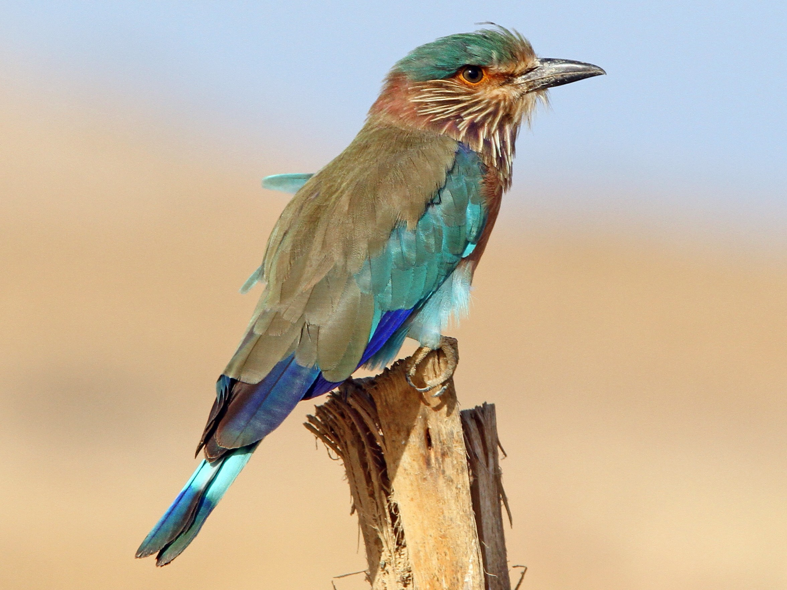
Credit: Macaulay Library © Cornell Lab of Ornithology ML126556251
Size: Myna++
Status: Common resident
Field characters: Crow-sized (30-34 cm) with striking blue plumage. Brown head
and back contrast with bright azure-blue wings and tail. Throat violet-blue with
white streaks. Deep ultramarine wing patches conspicuous in flight. Sexes
alike.
Best seen at: Found in open areas with scattered trees across campus.
Habits: Conspicuous percher on exposed branches and wires. Makes spectacular
aerial displays with rolling flight and harsh calls. Hunts from perch, taking large
insects, small lizards, frogs, and occasionally mice.
Nesting: Breeds March to July. Nests in tree hollows or holes in old buildings.
Clutch 3-5 glossy white eggs. Both parents share incubation (17-19 days) and feeding
duties.

Credit: Macaulay Library © Cornell Lab of Ornithology ML265163661
Size: Myna+
Status: Common resident
Field characters: Medium-sized bird (23-24 cm). Male pale grey with glossy
black head, throat and upper breast. Female similar but head grey with faint barring
below. Both sexes have broad black wings with narrow white edge. Long, graduated
tail.
Best seen at: Found in wooded areas and gardens with good canopy cover.
Habits: Methodically searches foliage for insects, moving deliberately through
canopy. Often joins mixed-species hunting parties. Flight strong and direct. Call a
harsh ’kree-kree’ and various sharp notes.
Nesting: Breeds April to July. Builds small, shallow cup nest of fine twigs on
horizontal branch. Clutch 2-3 pale grey-green eggs with dark brown spots. Both
parents share nesting duties.

Credit: Macaulay Library © Cornell Lab of Ornithology ML133939181
Size: Sparrow
Status: Common resident
Field characters: Small slim bird (16-17 cm) with long tail. Striking sexual
dimorphism: male black above with bright orange-red patches, orange-red below;
female grey above with yellow patches, yellow below. Both show distinctive wing
pattern in flight.
Best seen at: Found in wooded areas throughout campus, particularly in areas
with tall trees.
Habits: Active and restless, moving through canopy in small parties. Constantly
utters sweet whistling notes to maintain contact. Expert at catching insects on wing.
Frequently joins mixed-species foraging flocks.
Nesting: Breeds March to June. Builds tiny, neat cup nest camouflaged with
cobwebs high in tree fork. Clutch 2-4 pale green eggs with brown spots. Both parents
share all nesting duties.

Credit: Unknown - Unknown location Macaulay Library © Cornell Lab of Ornithology ML126373401
Size: Sparrow–
Status: Common resident
Field characters: Tiny bird (9-10 cm) with short tail. Grey-brown above, dull
white below with faint streaking on breast. Distinctive pale median streak on crown.
Short, curved bill. Sexes alike but male slightly brighter.
Best seen at: Found wherever flowering and fruiting trees occur, especially
parasitic Loranthus.
Habits: Extremely active, constantly flitting between flowers and fruit. Sharp
’chick-chick’ calls. Specialized in feeding on Loranthus berries, helping disperse this
parasitic plant. Also takes nectar and small insects.
Nesting: Breeds mainly March to May, but can breed year-round. Builds beautiful
pear-shaped hanging nest with side entrance. Clutch 2-3 white eggs. Both parents
share nest-building, incubation and chick care.

Credit: Macaulay Library © Cornell Lab of Ornithology ML44950691
Size: Sparrow
Status: Common winter visitor
Field characters: Slender bird (18-19 cm) including long tail. Grey upper
parts, bright yellow underparts. Distinctive white supercilium and double
wing-bars. Breeding male has black throat. Long tail constantly wagged up and
down.
Best seen at: Found near water bodies and damp areas on campus, including
artificial ponds and drains.
Habits: Active forager along water edges, running and walking while wagging tail.
Catches insects both on ground and in flight. More solitary than other wagtails. Flight
undulating with sharp ’tsi-tsi’ calls.
Nesting: Does not breed on campus; winters September to April. Breeds in
temperate Asia and Europe.
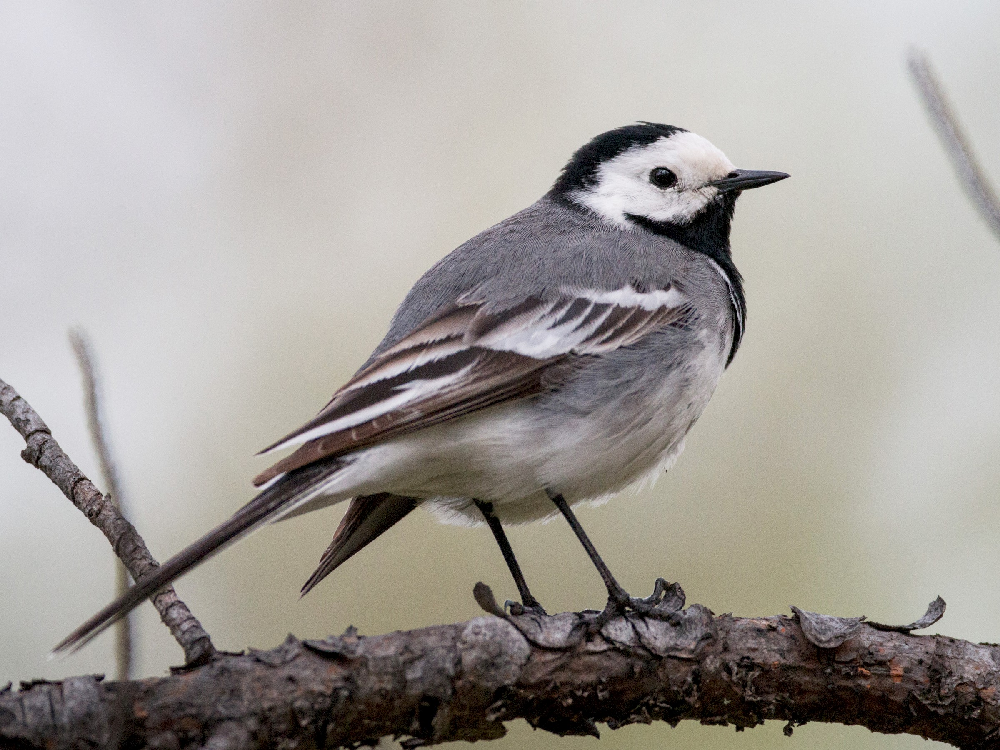
Credit: Macaulay Library © Cornell Lab of Ornithology ML44586821
Size: Sparrow
Status: Common winter visitor
Field characters: Medium-sized wagtail (17-19 cm) with long tail. Variable
plumage: winter birds grey above, white below with black breast band. Face pattern
varies between races. Distinctive walking gait with tail-wagging.
Best seen at: Found in open areas, lawns, and near water bodies across
campus.
Habits: Walks gracefully on ground with characteristic tail-wagging. Often in small
loose groups. Feeds mainly on ground-dwelling insects and small invertebrates.
Flight strongly undulating with ’chiswick’ call.
Nesting: Does not breed on campus; winters September to April. Several races visit
in winter, differing in face patterns.

Credit: Unknown Unknown location Macaulay Library © Cornell Lab of Ornithology ML126385911
Size: Sparrow+
Status: Common resident
Field characters: Largest Indian wagtail (19-21 cm). Striking black and white
plumage: black above with prominent white supercilium and wing patches. White
below with bold black breast-band. Long black tail with white edges. Sexes
alike.
Best seen at: Found near water bodies and open grassy areas across campus,
particularly around artificial ponds.
Habits: Active forager, running and walking gracefully while wagging tail. Often in
pairs, territorial throughout year. More attached to specific sites than other wagtails.
Clear, melodious whistling calls.
Nesting: Breeds March to September, peak in April-May. Builds substantial nest in
holes in walls or banks near water. Clutch 3-5 greyish-white eggs with brown
speckles. Both parents share incubation and feeding duties.

Credit: Macaulay Library © Cornell Lab of Ornithology ML126386161
Size: Sparrow-
Status: Common resident
Field characters: Small bird (13-14 cm) with seasonal sexual dimorphism.
Breeding male black above with two white wing-bars, bright yellow below;
non-breeding male and female green above, yellow below. Bill slender, slightly
curved.
Best seen at: Found in wooded areas and gardens with good tree cover,
particularly where flowering trees occur.
Habits: Active and acrobatic, constantly moving through foliage searching for
insects. Sweet melodious calls including whistles and chattering notes. Often hangs
upside down while foraging. Usually seen in pairs.
Nesting: Breeds April to September. Builds neat, tiny cup nest in tree fork,
well-camouflaged with cobwebs. Clutch 2-3 pinkish-white eggs with dark spots. Both
parents share nesting duties.

Credit: Macaulay Library © Cornell Lab of Ornithology ML133732751
Size: Sparrow-
Status: Common resident
Field characters: Small, sprightly bird (14 cm) with distinctive pattern. Grey
above, white below with black cap extending to nape. Bold black stripe down center
of white breast and belly. White cheeks and nape patch conspicuous. Sexes
alike.
Best seen at: Found in wooded areas and gardens across campus, especially areas
with mature trees.
Habits: Active and acrobatic, often hanging upside down to probe bark and leaves.
Usually in pairs or family parties. Various calls including sharp ’titee-titee’ and
whistles. Diet includes insects, seeds, and fruits.
Nesting: Breeds March to July. Nests in tree holes, sometimes using old barbet
holes. Clutch 4-6 white eggs with red-brown spots. Female incubates, both parents
feed young.

Credit: Macaulay Library © Cornell Lab of Ornithology ML126385421
Size: Sparrow–
Status: Common resident
Field characters: Tiny bird (10 cm) with long curved bill. Striking sexual
dimorphism: breeding male metallic blue-black with purple sheen and pectoral tufts;
non-breeding male and female olive-brown above, yellow below. Both forms show
dark breast band.
Best seen at: Found throughout campus wherever flowering plants occur.
Habits: Very active, constantly moving between flowers. Hovers briefly while
probing flowers with long bill. Males perform hovering display flights with excited
twittering. Takes insects in addition to nectar.
Nesting: Breeds mainly February to May. Builds beautiful pendant nest with
porch-like entrance. Clutch 2-3 greenish-white eggs with brown spots. Female builds
and incubates, both parents feed young.
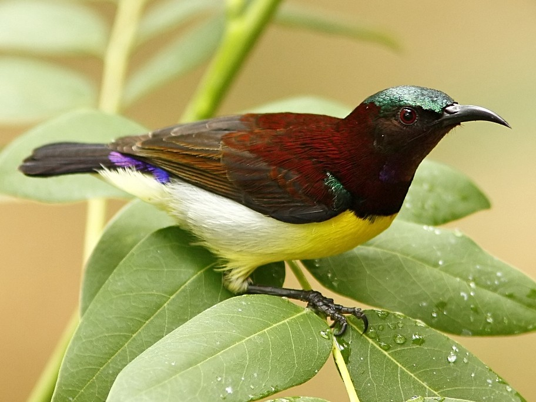
Credit: Macaulay Library © Cornell Lab of Ornithology ML126401131
Size: Sparrow–
Status: Common resident
Field characters: Tiny sunbird (10 cm) with curved bill. Male has metallic
blue-green crown, maroon breast-band, purple rump; rest of underparts bright
yellow. Female olive above, yellow below. Both sexes show pale throat, dark
eye-stripe.
Best seen at: Found in gardens and wooded areas with plenty of flowering
plants.
Habits: Highly active, moving rapidly between flowers. Less given to hovering than
Purple Sunbird. Sweet whistling calls. Often in pairs, males aggressively defend
flowering territories.
Nesting: Breeds year-round with peak February to May. Builds elongated pendant
nest with porched entrance. Clutch 2 greenish-white eggs with brown markings.
Female incubates, both parents feed young.
______________________________________________________________________________________________________________________________________________________
_______________________________________________________________________________________________________________________________________________________________________________________________________________________________________________________________________